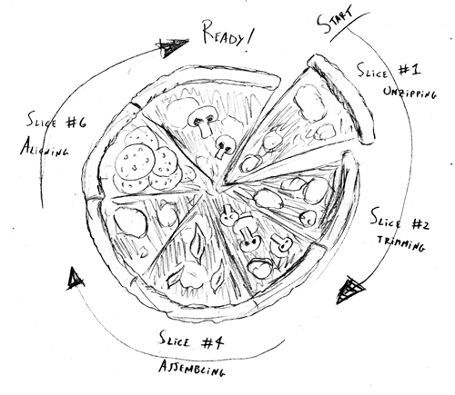
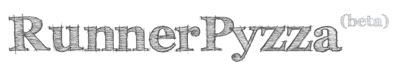

Whoops! You have javascript disabled
You won't be able to navigate through the pages of this site, sorry :(


An easy to use queue system for laboratory networks
RunnerPyzza is in still in development: soon there will be manuals, recipes, FAQs and so on...
Download »
Look at the code »